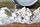

Wheat berry
{kind=link}
A wheat berry or wheatberry is an entire wheat kernel (except for the hull), composed of the bran, germ, and endosperm.[1] Botanically, it is a type of fruit called a caryopsis.[2] Wheat berries have a tan to reddish brown color and are available as either a hard or soft processed grain[clarify]. They are often added to salads or baked into bread to add a crunchy texture. If wheat berries are milled, whole-wheat flour is produced.
Wheat berries are the primary ingredient in an Eastern European Christmas porridge called kutya. In France, cooked durum wheat berries are commonly eaten as a side dish instead of rice or corn. This side dish is often called Ebly, from the name of the first brand of prepared wheat berries. In 2014, McDonald's offered an Ebly salad for its upscale menu in Switzerland.[3]
-
Wheat berries cooking - soaked then sauteed with spring onion
-
A salad prepared with wheat berries
{kind=link}
{kind=link}
See also[edit]
{kind=link}
- Cuccìa, the Sicilian wheat berry dish
- Bulgur, another whole wheat preparation
- Frumenty, a dish made with boiled wheat berries
- Graham flour
- Rejuvelac, a fermented drink made from sprouted grain
References[edit]
- ^ The Complete Guide to Growing and Using Wheatgrass: Everything You Need to Know Explained Simply. Atlantic. 2010. p. 132. ISBN 9781601383396.
-
^ James D. Mauseth (2014). Botany. Jones & Bartlett Publishers. p. 223. ISBN 978-1-4496-4884-8.
Perhaps the simplest of fruits are those of grasses (all cereals such as corn and wheat)...These fruits are caryopses.
- ^ "McDonalds Has A $12 Burger On Its New 'Signature' Menu In Switzerland". Business Insider. 27 March 2014. Retrieved 19 July 2014.
| Types | ||
|---|---|---|
| Agronomy | ||
| Trade | ||
| Plant parts and their uses | ||
| Basic preparation | ||
| As an ingredient | ||
| Associated human diseases | ||
| Related concepts | ||
{kind=link}
|  | This food ingredient–related article is a stub. You can help Wikipedia by expanding it. |
{kind=link}